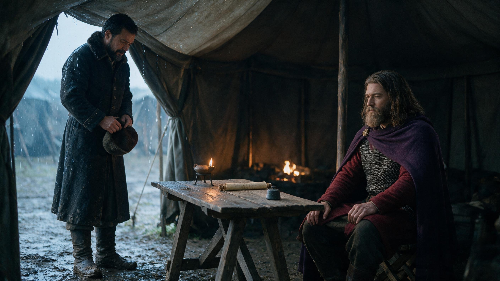
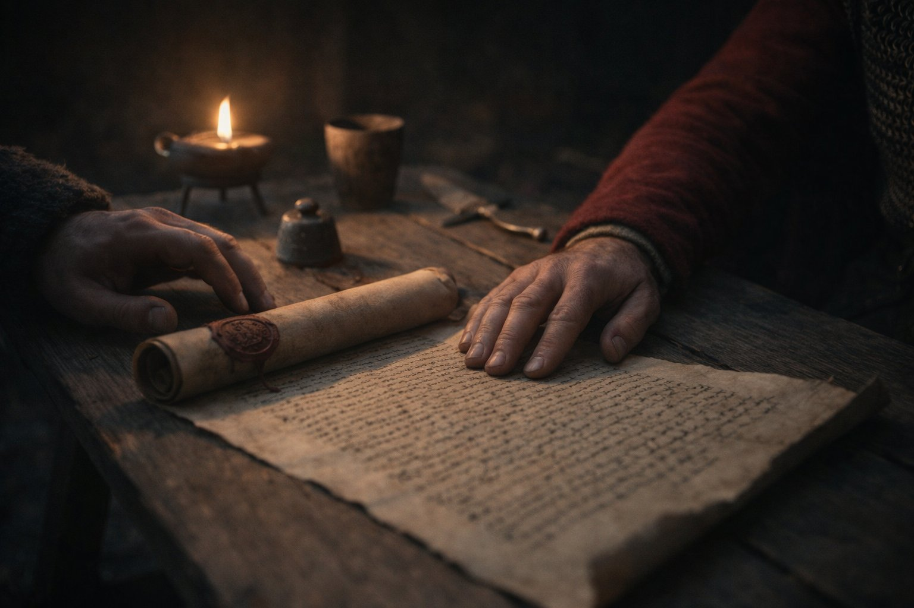
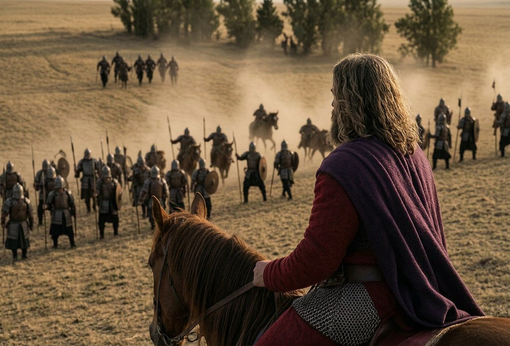
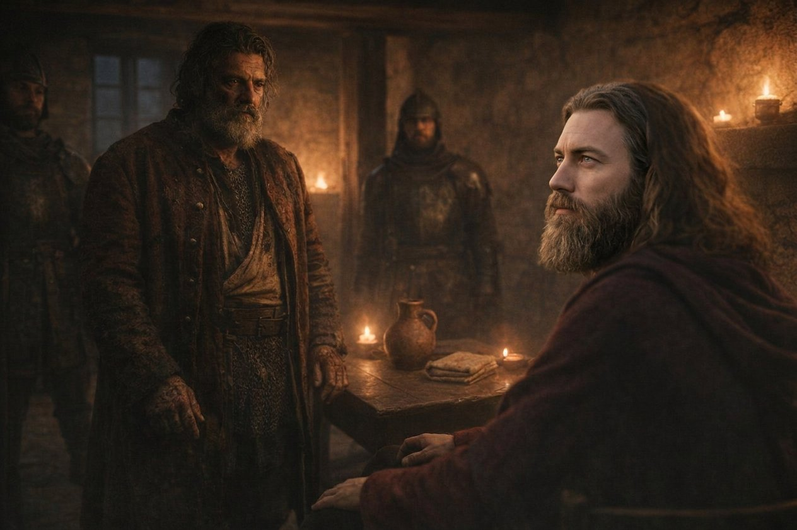
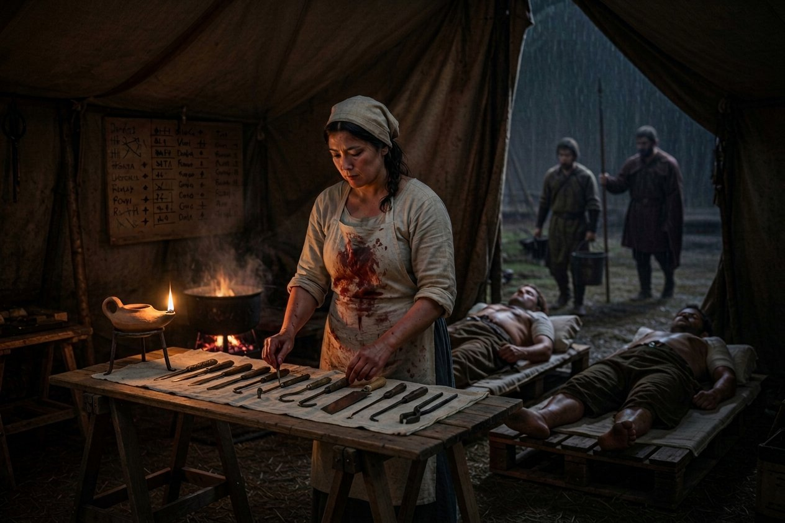
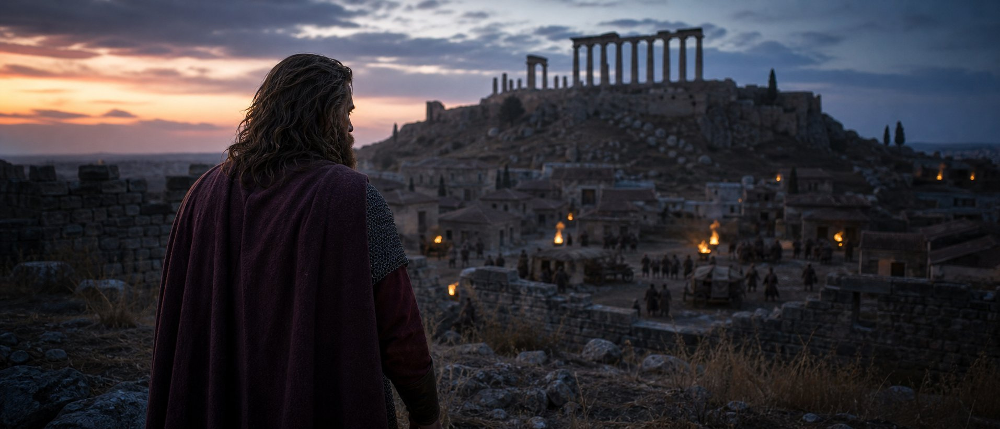
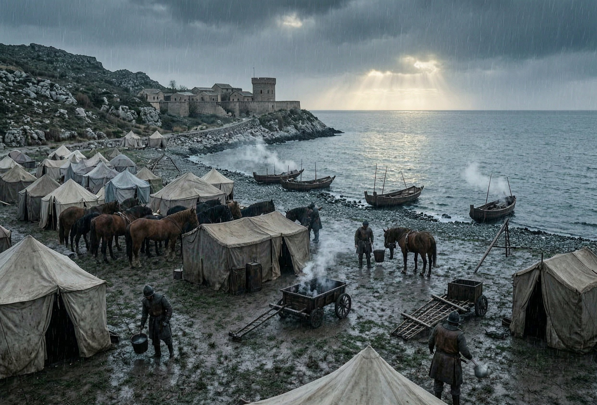
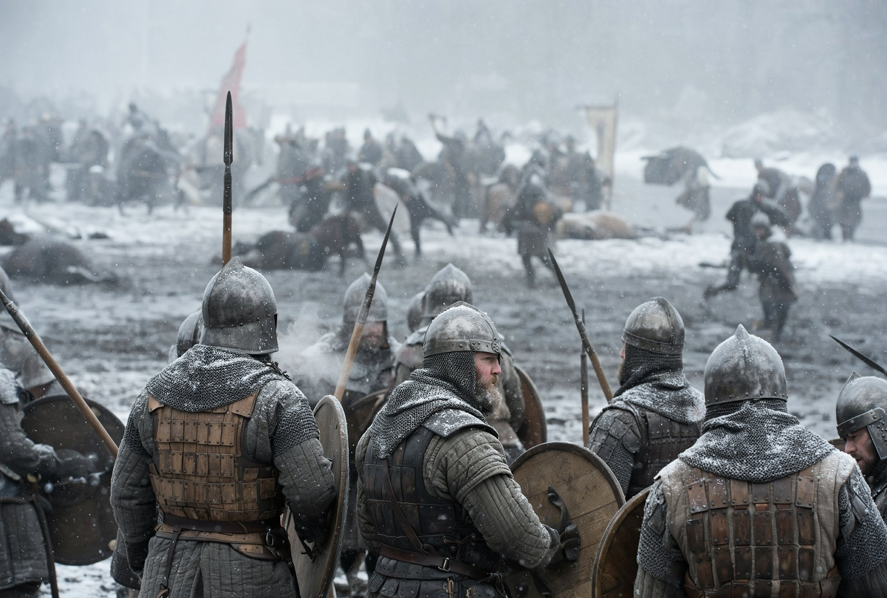
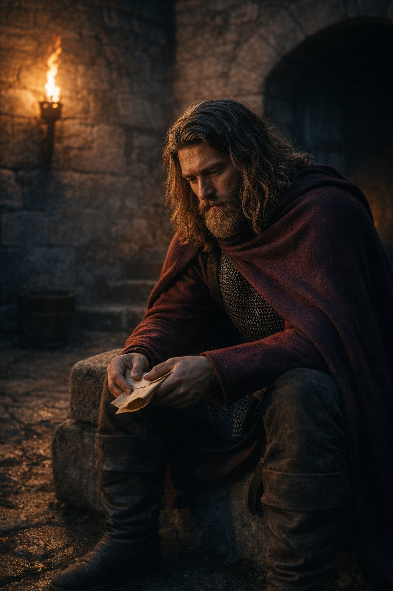

The claim
Count Bajan came to the camp on the twenty-sixth day of the first month of 887, and he came without a letter of introduction, which for a man of his sort is an act of humiliation and is meant to be read as one.
He had a claim on a duchy. I want to set down what that means before I set down what he asked, because a claim is the cheapest thing in the world and half of the wars in these countries are about the other half of them.
A claim is a knot of marriages.1 Somewhere four generations back a woman was married to the wrong brother, or a will was witnessed by a man who was not entitled to witness it, or a court gave a county to a man whose mother had a better right than the woman who got it. The lawyers write it out on parchment; the parchment proves that the claim exists and says nothing at all about whether it should. What makes a claim into a war is not the parchment. It is a man with an army who says he will enforce it.
Bajan had the parchment and did not have the army. He had three counties and an income and forty men of his own and he was a Bulgar of about forty with a claim on the Duchy of Vidin, half of which he had been chasing for six years against a family that outnumbered him, and the other half of which he had never once been in a room where anybody believed it, including himself.
And now he was standing in the rain outside a tent of twenty-five companies of soldiers, with his hat in his hands and his boots ruined, and he had come to the one man in that country who could enforce the parchment and had, a year and a half before, paid a steward to embarrass him at a board game.
I want it written down how the officers' table received him, because I was one of the men at that table and I was wrong, and the book has not had me wrong in it yet.
Petre said what the company said: that we should take the man's money for a hill in Bulgaria and let him whistle for his duchy. Atenulf, who had come back from Marmaros with two-thirds of his men, said that a company that fights for a claim fights for nothing, because when the war is over the thing you fought for belongs to the man on the parchment and you are still paid by the month. And I said, with numbers, which is the only way I say anything: that Vidin is eight years of a Bulgar family's quarrels, that a war for a claim has no end you can see from the start of it, and that the Captain had already been paid once for making a duke and had come out of it with a cart.

The Captain let us all finish. That is the thing about that table nobody writes down: he lets a man finish, and then he answers, and the answering is usually shorter than the argument.
What he said was this, and I wrote it down on the back of the paymaster's sheet within the hour, because I knew I would not get it again.
"You are all right, and you are all counting the war. I am counting what is left after it. In eleven years we have been paid in silver by seventeen lords and we have come out of every war either the same size or smaller. There is one thing we have never been paid in, and it is the only thing that accrues. A man who owes me a duchy owes me for thirty years, and his son owes me, and every lord in this country who sees him hold it knows who put him there and how much of an army it took."
Petre said: and if he loses it in five years?
"Then I will have lost an army," the Captain said, "and I will have been paid for losing it, and I will be the man who tried. Nobody in this trade is remembered for a contract they did not take."

I want to be fair to him, so I will put the other side of it in the book, in my own voice and marked as mine. Two of the four battles of that war were fought against men who had never done us any harm, and one of them was fought against a duke whose throne we had saved with his own hall still smelling of the fire we put out. I did not think the duchy was worth it in the first month of 887, and I did not think so in the ninth month of 889, and I have been wrong about the company before and been told so, and this time nobody told me so; the ledger told me, and the ledger was not on my side either, which is the thing I have never got used to.
The agreement was three days in the making. Bajan's claim went to the Captain's hand and the Captain's army went to Bajan's claim, and the terms were that the company was paid by the month at a rate that would not make us rich, and that when Vidin passed, the man who held it would owe the Captain a debt of service that could be called on once, in men, and could not be refused.
I asked him afterwards why a debt of service and not the money, and he said: money is a thing a lord can pay and forget. And I asked him what the debt was for, and he said: for whatever comes next. And he did not say what it was for, and I did not ask, and eleven months later a title changed hands in Bulgaria because of a clause I had written out in a tent in the rain.
Tarnovgrad
The war was declared on the twelfth day of the third month of 887, in the Bulgar fashion, which is to say that Bajan's herald read it out at a gate and somebody threw a bucket at him.
Gavril the younger held Vidin and had three times Bajan's men and the whole of the Bulgar nobility on his side, and by the fourth month he had begun to take the campaign seriously, which is to say he had begun to buy companies. He bought nobody of any size; a captain in that country in the spring of 887 had a choice between a duke who might win and a Bulgar count with a parchment and the largest company in the Balkans standing in his yard, and they chose the same way men always choose, which is late and wrong.
The first fight of the war was not ours. On the fifth day of the seventh month Bajan held the crossing at Koznik with his own forty men and two hundred that the Captain had lent him for the purpose, against eleven hundred of Gavril's2, and he held it because a captain of ours called Slavac put the two hundred in a wall behind the water and refused to move, and it is the only thing in this chapter that Bajan did by himself. He was not a coward. I want that in the book, because for two years I had thought he was, and a man can be a fool at a board game and still stand in a ford.

On the sixth day of the seventh month we fought at Tarnovgrad, and it was not a battle in the sense that this book has been using the word.
Gavril the elder commanded there: fifty-eight years old, the head of the family, and he had put his men on a slope north of the town in the old fashion, one line, no reserve, expecting that a company of ours would come up the hill at him. The Captain did not come up the hill. He put the armoured foot in the centre and refused the right and sent the horse round the flank through a wood at the hour when the sun was in their eyes, and it was over in the time it takes to walk a mile and a half.
Two thousand three hundred and three of ours against five hundred and ninety-one of theirs. All five hundred and ninety-one were killed or taken. We lost two men.3 Two, out of two thousand three hundred, in an afternoon in July, and one of them was a boy from Preslav called Branimir who had joined at Silistra and had not yet been in the field, and Matako wrote his name at the top of the list and the paymaster owed him nine days.
I am going to write down what it is like to win like that, because the book has not done it honestly and because a reader who has come this far deserves it. It is not like a victory. There is no moment in it when the enemy breaks and your men shout; there is a moment when their line goes soft in the middle and then the business becomes butchery at a walk, and the men do it with their faces set and their mouths shut, and afterwards they do not look at each other, and the ones who have never done it before are sick and the ones who have are quiet.
The Captain did not go up the hill at the end of it. He sat on his horse at the bottom with his reins in one hand and watched the foot go through, and Chrysogonos — I — stood next to him, and he said one thing, to nobody: they should not have put the old man there.
I asked him what he meant, and he said: it was his family's war and they put him at the front of it because he is the head of the family, and I have just killed five hundred and ninety-one men who were following a man of fifty-eight who should have been at home. And he said: write it down, and I said I would, and this is the writing down.
Vidin, and Tepes
Vidin is a fortress on the Danube with a wall that goes down to the water and a town inside it, and in the ninth month of 887 it was held by the younger Gavril with fourteen hundred and fifty-three men, and Gavril had done the one thing that a man in his position could do, which is to send for the best soldier in the country.
The best soldier in that country was Duke Tepes of Muntenia. He was the man whose throne this company had saved in the tenth month of 883, in his own hall, with his sword in his hand and his hands shaking; the man in whose war we had destroyed an army of fourteen hundred and thirty-eight for the loss of seven men at Câmpulung in the second month of 884; the man who had paid us and had written us a letter afterwards and had, I have no doubt, told the story of it at his own table for three years.
He came to Vidin in the eighth month with a thousand men and his own household and his own cook, and he was on the wall when we came up to the town, and I saw him there through the glass, and he was looking at our standard the way a man looks at a bill he thought had been paid.
I want to be exact about what I felt, because I have been told that I have no feelings and it is not true, it is only that I have them in the order a soldier has them. What I felt was: this is the company's own fault. We taught the whole of that country what a company could do to an army, and now they are all using the lesson, and the man who learned it best is standing on the wall with our own reputation in his hands.
The Captain sent a man to the gate on the twelfth day with a letter, and the letter said that the company held no quarrel with the Duke of Muntenia and would take his parole and his parole for his men, and that if he marched out with his household there would be no battle.
Tepes sent back a line. It said: I have given my word to a man who was in my hall, and I cannot be forsworn twice in one life.
I did not understand that sentence for two years. When I did understand it, I understood something about the trade we are in that I have not been able to put into a ledger since.

We fought on the seventeenth day of the ninth month. Three thousand and sixty-one of ours against Tepes's fourteen hundred and fifty-three, which were Gavril's men with a duke at the front of them, and the arithmetic of it is the arithmetic of Tarnovgrad, and the fighting was not, because Tepes was a soldier and Gavril the elder was not.
He put his centre behind a sunken road where our horse could not come at it, and he held it for two hours, and in the second hour the Captain did a thing I had not seen him do since the Morava, which is to go forward himself with the second company of armoured foot and stand in the sunken road and take it hand to hand. I went with him. It is the only time I have been in a fight at his shoulder and I am not going to make a story of it: it was forty minutes of a great deal of noise in a ditch, and at the end of it the ditch was ours and Tepes's household was going back to the water.
All fourteen hundred and fifty-three were killed or taken. We lost five.4 Tepes was taken, and brought to the tent, and he came in with his sword gone and his coat torn and his hands black to the wrist, and he stood in front of the Captain and said nothing at all.
The Captain said: your parole for your men, and your household out of the town by the morning, and no ransom. And Tepes said: and my word to Gavril? And the Captain said: you have kept it. And Tepes stood there a moment and then he said the thing I have written above, and went out.
A word about the wounded, since Matako is not writing this book and Yehudis would not write it the way it wants writing.
Yehudis had been with us two years by Vidin and she had changed the arithmetic of a battle more than any officer in it. At Câmpulung in 884 we lost seven men and buried four of the wounded afterwards, and at Vidin we lost five and buried none, and the difference was not the enemy, it was one woman of thirty-six with a chest of instruments and a rule that a man who was breathing when he came off the field was a man she was going to be busy with.
She had a tent of her own by Vidin and she ran it like a quartermaster: two boys to carry water, a fire kept at a boil, a table of instruments laid out in the order she would need them, and a board at the flap with the names of the men inside and a mark against each name every hour. The Captain went in twice a day and did not speak to her, and on the third day she said to him, in front of me: I do not need you to look at them, I need you to send me the cord and the clean linen, and he sent it the same afternoon, four carts of it, out of the paymaster's account and not out of hers.

Vidin did not fall that day. A fortress does not fall because an army in front of it is destroyed; it falls when the men on the wall have watched the army destroyed and have done the sums. Gavril the younger came out eleven days later, and Bajan's men were in the citadel by the first of the eleventh month, and the war went on for two years after that, which is the thing that nobody at the table in the first month of 887 had been able to imagine.
Orsova, and the Emperor
We fought at Orșova on the eighteenth day of the tenth month, on the river, in the county next to Tarasiy's old one, against seven hundred and forty-six of Gavril's men who had been left there to hold a ford and had not been told how many of us there were. Two thousand three hundred and two of ours. All seven hundred and forty-six lost. One of ours.5
One man. His name was Vazul and he was a Vlach who had joined after Câmpulung and he was killed by a bolt from the far bank after the fighting was over, by a man who had not been told that the fighting was over either. I have written his name in three books now. The company has a way of saying that a battle costs nothing when it costs one man, and I have begun to notice that the one man is never nobody.
On the twenty-third of that month, three days after Orșova, the Captain took a contract that I argued against harder than I argued against Vidin, and lost the argument in twenty minutes.
The Emperor Basileios had a revolt on his hands. A woman called Anthousa had raised the Greek country against him, and the palace wanted companies, and it wanted them the way palaces want things, which is immediately and at a price that assumes you have nothing else to do.
I said: we are in the middle of a war of our own making in Bulgaria, eleven hundred miles from the Greek country, and an army cannot be in two countries in the same month. And the Captain said: no. But a company can be paid twice in one year, and this one is going to be, and one of the two is an emperor and the other is a Bulgar count.
He took it. He sent four companies south under Atenulf and the rest of us stayed, and the four companies were in the Emperor's war for eleven months6 and I was not with them, and I have the letters and the pay sheets and nothing else, and I am not going to write a battle I did not see.
Athens
What I saw was Athens, and I saw it in the ninth month of 888, and I have been putting off writing about it for a year.
We came south in the summer of 888 with nine companies, because the Bulgar war had gone quiet and a company that is quiet is a company that is costing money. The Emperor's war had come south too, and by the ninth month Anthousa was in Athens with six hundred and eighty-seven men and the Emperor's marshal was outside the wall with four thousand one hundred and fifty-three, of which ours was a fifth.

Athens is a town I had been in before. The book has it: in the first month of 880 this company stood in the weeds by the unfinished temple of Zeus and prayed in Greek, and Dehanagadevi stood in irons at the back of it, and I was not there, I joined at Constantinople in the ninth month of 879 and I was with the carts.
Now I was there. There were four thousand of us and a wall and a woman in it, and there is a hill in that town with a temple on it and the temple has no roof.
The Emperor's marshal did not assault the wall. He sat outside it for nine days and then a gate was opened from the inside by men of the town who had done the arithmetic, and Anthousa's people were taken in the street, and the whole of it took an afternoon and cost the Emperor's army a hundred and forty men and cost ours nine.
Six hundred and eighty-seven against four thousand one hundred and fifty-three.7 The record of that war is a single line and a number, and the number is the number of a massacre that happened over an afternoon in a town with a temple on a hill.
I walked up the hill afterwards, in the evening, with the moon coming up over the roof, and I want to write what I thought and I am not able to, because what I thought was not a thought, it was an inventory. The temple in 880 and the temple in 888. A company of a hundred and eighty men praying in the weeds and a company of five hundred watching a woman taken in a street. Two gods in a chest on a cart under the wall.
There is a thing I have to say about that afternoon which is not about the company and is the reason I have been putting this page off.
In the first month of 880 this company stood in the weeds of that temple and prayed in Greek, a hundred and eighty men, in the rain, with the whole town asleep and one prisoner in irons at the back of the congregation. I have the account of it from Matako and from two of the Greeks who were there. It was, by every account, a small and ridiculous and entirely serious thing.
Eight years later there were five hundred of us in the same town with a marshal's army, and the temple was eight years more ruined, and nobody prayed in it. That is not a comment on the Captain. It is a comment on arithmetic: a hundred and eighty men can afford a rite and five hundred cannot, because a hundred and eighty men are a company and five hundred are a garrison, and a garrison has a chapel and a rota.
I went up the hill in the evening and stood in the same weeds and I said the names, quietly, in the way the book says he did: not as a prayer, as an inventory. Then I went down again, and the next morning we were marching north, and I have not been up that hill since.
I will put it in the count instead, where numbers belong.
The coast, and the two wars that were not ours
The autumn and winter of 888 and the spring of 889 were the idlest eight months this company has had since the northern years, and they were not idle in the way that a book likes.
Bajan's war would not end. We had destroyed three armies and taken a fortress and made a duke's claim a fact, and the war went on in the Bulgar country the way wars go on when the men fighting them are not the men who wanted them: garrisons, sieges of small places, a wall lost and retaken, a bridge burned by a man nobody had heard of.
So the Captain did what he does when a war is slow, which is to sell the company's time in pieces that do not have to fight. We spent the winter on the coast, at Skadar and Ulcinj and Plav, in the Montenegrin country, and the work was the work that pays and does not show: a road, two garrisons, a mill, a quarrel between a monastery and a village over water.

Matako hated it. She said, in her own words, which I am allowed to quote: eight months of counting other men's sheep. And she was right, and the Captain kept the company there anyway, and the reason he kept it there is the reason this chapter has the shape it has, and I did not see it at the time.
Two more contracts came in that winter and both of them were other men's claims on other men's counties, and the company fought neither of them with its whole strength.
The first was Bereg, for Ljutomisl, against Domoszló the Brute, who had taken Severin off Tarasiy in 882 while this company was in Rome singing in a wet field. The Captain took it and gave it to two companies and a captain called Prijezda and did not go himself, and it was still running when the book closes.8
The second was Brăila, for Stefan, and that one was won in the fourth month of 889 by our horse, at a distance, in a place none of us saw.
I asked him why he took two wars he did not mean to fight himself, and he said: because a company that is not fighting is a company that is for sale at a lower price, and I want the price to stay up while I am doing something else. And I asked him what the something else was, and he said: waiting.
Branicevo
On the last day of the Bulgar war, or near it, we fought at Branicevo, and it was the only battle of the whole two years in which the numbers were even.
One thousand seven hundred and ninety-nine of ours against one thousand eight hundred and nine of theirs, in the second month of 889, in the snow, on ground that neither side had chosen because both sides had arrived at it in the dark.

I will not make this into a set piece. Fourteen of ours were killed and eleven hundred and sixty of theirs9, and the difference between those two numbers is not skill, it is that our foot are drilled and theirs were not, and if you want to know what eleven years of drill is worth, it is that ratio and nothing else.
But I will write down that this was the battle in which the company noticed that it was good. Not the Captain; the men. There is a thing that happens to a body of men who have won seven battles in two years against odds, which is that they stop believing they can lose, and it is worth more than a company of horse and it is the beginning of every disaster in this trade. Virupaksha, who was seventy-three and had come out of the carts for it, said to me afterwards: they are going to think they are lucky. And I said: they are lucky. And he said: no. Luck is what we had at Severin. This is a drill, and a drill is a thing you can lose.
He was right, and he was dead within three years, and I have written that sentence three times and struck it out twice.
One more thing before the investiture, and it belongs here and not in a chapter about iron.
Dehanagadevi had her irons struck off in the eleventh month of 886 and she was, by the spring of 889, keeping the stores of this company.
Nobody decided it. That is the thing about a company that a book cannot quite render: there is no scene in which it is agreed that the woman who killed a man of ours will count the grain. What happened was that the man who had kept the stores before her died at Branicevo, and the stores were in a cart with a broken axle, and somebody had to count them, and she was standing there, and she counted them, and the count was right.
By the summer she had a ledger bound in canvas with three columns and a system of marks of her own, and the company's grain began to arrive in places it had not arrived before, and nobody said anything about it at all. Chrysogonos asked her once whether she wanted the pen back for the book, since she had a better hand than his. She said: I have a better use for it. And that is the last thing she ever said to me about the irons.
The investiture
On the sixteenth day of the fourth month of 889 a title changed hands because of this company, and I was four paces away from it, and it is the strangest thing I have seen in eleven years of soldiering.
It was held in the hall of the citadel at Vidin, which is not a great hall; it is a stone room with a beam in it and a window with no glass. There were perhaps sixty people: Bajan's household, four Bulgar lords who had come to see which way the wind blew and had decided, the Emperor's man from Sardica, two bishops, and the officers of this company in their coats with their hats off.
Bajan knelt to the Emperor's representative and was given the duchy10, and the parchment was read out in Greek and in Bulgar, and it took a quarter of an hour, and if you had walked in halfway through you would not have known which of the men in the room had done it.
That is the thing I cannot get past. The Captain stood at the side with his hands behind his back, in the crimson coat and the purple cloak, thirty-nine years old, and he did not kneel and was not asked to kneel, and nobody in that room said the name of the company once. The thing was handed to a Bulgar because a company of twenty-five hundred men had destroyed three armies to put it in his hands, and the ceremony had no place in it for the company at all.
Afterwards, in the yard, Bajan came to him. He had the parchment in his hand and he was, I think, embarrassed, which is not the reaction the book has taught me to expect from men who get what they want.
He said: I owe you a debt of service and I will pay it. And the Captain said: you will. And Bajan said: and I want you to know that I have not forgotten the board game. And the Captain said: neither have I.
That is the whole of it. Eleven words in a yard in Bulgaria, and eight months later the man who said the second sentence was a duke with a wall on the Danube, and the man who said the last sentence had been paid his fee and his debt of service and still owned a cart.
The count of 889
Here is the count, and it is the best one this book has printed and I want the reader to see all of it at once.
Forty-seven companions on the roll of the household, up from forty-one, because a company that wins recruits. Thirty regiments: six of armoured foot, six of light foot, six of archers, six of light horse, six of the Zhanmadao, and the Ayrudzi and the horse-archers and the rest in the sixes the army reckons in. One thousand nine hundred and twenty-nine men present of two thousand four hundred on the roll, which is eighty per cent, which is a good company and not a great one.11
One thousand six hundred and forty-four gold in the chest, which is more than twice what we had in 883 and less than a fifth of what the Captain is owed on paper by four men in three countries. Twenty-three thousand five hundred and thirty-nine in the piety of the roll, which is a number the army keeps for reasons of its own and which has nearly doubled in eight years, and which I do not understand and will not pretend to.
He is thirty-nine years old. He has beaten two armies for a Bulgar count, one for a duke he had saved, one for an emperor, and one in the snow for nobody in particular. He has made a duke. He holds no land, no title, no wife, no child, and no house that is not on wheels.

I said at the start of this chapter that I was against the war, and I was wrong, and I have to write the rest of it now, which is the part that took me a year to see.
On the night of the investiture I went out into the yard of the citadel at Vidin and the Captain was there, sitting on a mounting block with the standard behind him in the dark, and I said the thing I had been carrying for two years: it worked. And he said: yes.
And then he said a thing to me which is not in any ledger and which I have not been able to put out of my head since. He said: Chrysogonos, in eleven years I have been paid by seventeen lords and I have made one duke, and every one of those lords is a man who was born to it. I have never once been in a room where the parchment was being written.
I said: and now?
And he said: and now I know how it is written. It is a clerk, a bishop, a man who is willing to kneel, and an army nobody names. And he said: I have three of the four.
That is the end of this chapter. I am a soldier and I do not like the sentence, and I have written it down anyway, because it is what he said and because a book that leaves out the sentence a man says in a yard at night is not a book, it is a muster roll.